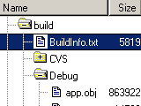
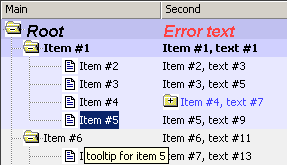

wxCode :: wxTreeListCtrl
Description & documentation

[wxCode::]wxTreeListCtrl A multi column tree control.
It is able to show a tree with multiple colums. The main column is shown as a tree, the others just as lists.
- Sorting after any column, incl. native numeric ordering
- Keyboard navigation, positioning via characters (main column)
- Show/hide any column (except main column)
- various attributes configurable for each row and cell: color, font, picture...
Here the API reference documentation.
NOTE: This is NOT the same control as introduced in wxWidgets 2.9
Although the original intention was probably to make wxCode::wxTreeListCtrl a standard wxWidgets control,
the
wxWidgets::wxTreeListCtrl
introduced with wxWidgets 2.9 is a new code base not related to wxCode.
Download

Latest version:
See the Readme.txt file for a detailed list of changes
in each release.
Previous versions:
Source:
Everything and more can be downloaded from  or you can browse the SVN source tree
or you can browse the SVN source tree
NOTE: CVS is obsolete !
On February 12th, 2011 the
CVS repository was migrated
to
SubVersion, including all revision history. Although CVS is still available, it is no longer updated.
New releases
Releases are not announced in advance, you have to check the project homepage (this page) from time to time, or subscribe to the wxCode mailing list.
Support - Latest info, open issues, feedback etc.
- bugs: you can report bugs through the wxCode bug tracker
- enhancements: requests for new features can be entered through the wxCode feature tracker
- feedback: To develop wxTreeListCtrl further we need to know what others think about. What is perfect, what is missing, what is wrong. It would be nice if could write your experience after some use into the wxCode mailing list (or GMane web interface, a simpler interface for occasional users).
- forum: in addition to the mailing above, see also the wxCode forum by wxWidgets. Note however that bugs and enhancement requests belong to the corresponding trackers (links above)
- See also Readme.txt and ToDo.txt.
Author
wxTreeListCtrl was created by Robert Roebling and the following persons have made significant contributions: Julian Smart, Alberto Griggio, Vadim Zeitlin, Otto Wyss, Ronan Chartois and maybe others.